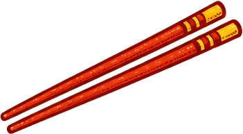

Gyozanomise Okei · Tokyo
One dish · TokyoGyoza.
1dish
~60years
1,320a day
Step 1 · The doughLittle by little


5 MIN
Hot water · strong flour · rest
Step 2 · The wrappersSoft as an earlobe


14 g
8 G
★
★
Step 3 · The fillingNapa cabbage only
Hakhakhak!
Step 3 · The fillingChives, slowly

Keeps the pork honest
Step 3 · The fillingWork it in your palm

SaltBlack pepperWhite pepperGingerSesame oil ×3
GrainySmooth
Step 3 · The fillingA whole day's rest
0 H
Then fold in cabbage & chives
Step 4 · The foldTwo years of practice
Step 5 · The panDon't watch. Listen.
WINGS!
Step 6 · EatPlain first

Nothing on it.
Eet smakelijk!
An 80-second gyoza lesson
Gyoza.
Eight grams at a time
Tap play. Sound on — there is a narrator.
0:00 / 1:20
Take it home
The recipe card
Quantities are our estimate The shop gives no measurements — the chef works by hand and feel. The 8 g wrappers, the rests and the ~6½ minute fry are from the video; the rest is a home-kitchen starting point for ~36 gyoza.
Dough
| Strong (bread) flour | 170 g |
| Cake flour | 30 g |
| Hot water | ~110 ml, added little by little |
| Sesame oil | 1 tsp, kneaded in |
Filling
| Fatty ground pork belly | 250 g |
| Napa cabbage | 250 g raw (blanched, chilled, chopped, squeezed) |
| Garlic chives (nira) | 40 g |
| Salt | 1 tsp |
| Black + white pepper | ¼ tsp each |
| Ginger | 1 tsp, finely chopped |
| Sesame oil | 1½ tbsp — "generous" |
Method
- Mix the flours. Add hot water little by little; knead. Rest 5 min, knead again, shape, rest 30 min (covered).
- Roll into logs, cut 8 g pieces, roll each into a thin round wrapper. The dough should feel as soft as an earlobe.
- Season the pork with salt, both peppers, ginger and plenty of sesame oil; work it in your palm until no longer grainy. Rest it in the fridge for a day.
- Blanch, chill and chop the napa cabbage with a cleaver; chop the chives slowly. Fold the vegetables into the meat.
- Fill (don't overfill) and pleat.
- Hot oiled pan, gyoza in a ring. Add hot water with a spoon of flour stirred in, lid on, about 6½ minutes — until the sizzle changes. Lid off, let the lacy wings crisp, flip onto a plate.
- First bite plain. Then soy, vinegar or chili oil as you like.
Based on Eater's The Experts episode with chef Hitoshi Umamichi of Gyozanomise Okei, Tokyo — watch the original. Illustrations and narration made for this page; the chef's words are paraphrased. Unofficial — go eat at Okei.